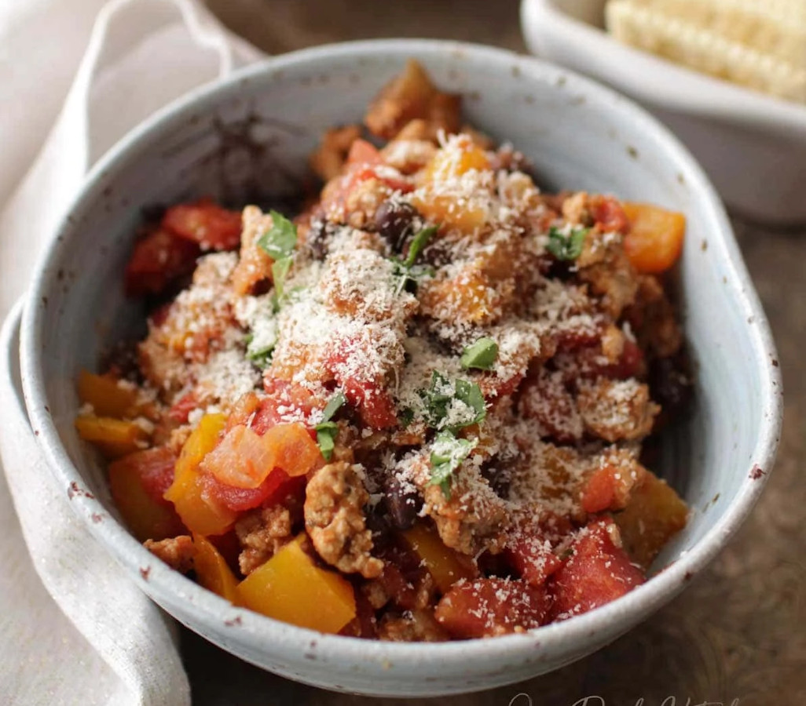

A healthy choice for one.
Ingredients
- 2 tsps olive oil
- 2 oz chopped onions
- 1 chopped yellow or red pepper
- 1 minced clove garlice
- 5 oz ground turkey
- 1/2 tsp Italian seasoning
- 1/4 tsp paprika
- 1/4 tsp salt
- 1/8 tsp pepper
- 10 oz canned tomatoes
- 2 oz canned black beans
- Optional: cheese, sour cream, tortilla chips, or cilantro for topping
Directions
- Heat the oil in a 10-inch skillet over medium heat.
Add the chopped onions and peppers. Cook, stirring occasionally for 2 minutes.
- Add the minced garlic and cook for 1 minute longer.
- Next, add in the ground turkey and break up the meat; stir occasionally and cook until no longer pink, about 8 minutes.
- Add the Italian seasoning, smoked paprika, salt, and pepper; stir for about 10 seconds.
- Next, add in the tomatoes and black beans. Bring to a boil, then reduce heat and simmer for 10 minutes.
- Taste and adjust seasonings and salt as necessary. Garnish with Parmesan cheese, sour cream, tortilla chips, or cilantro.